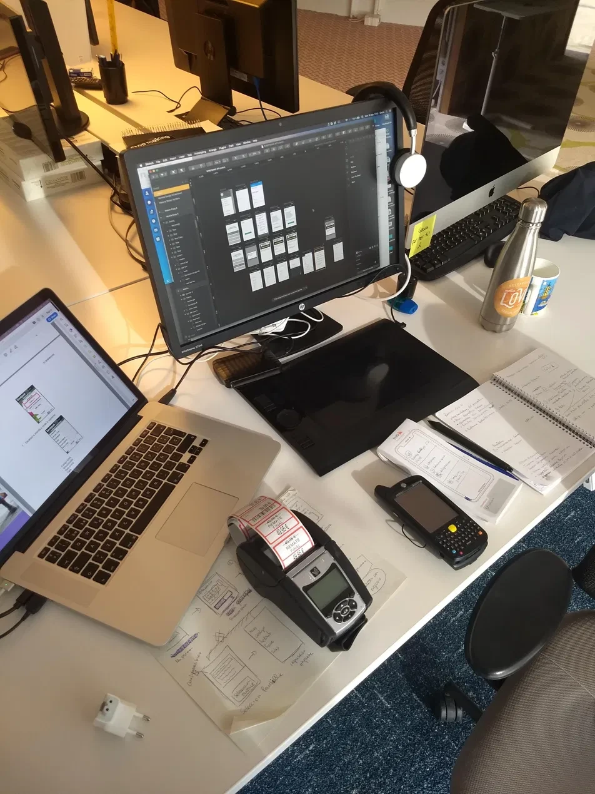
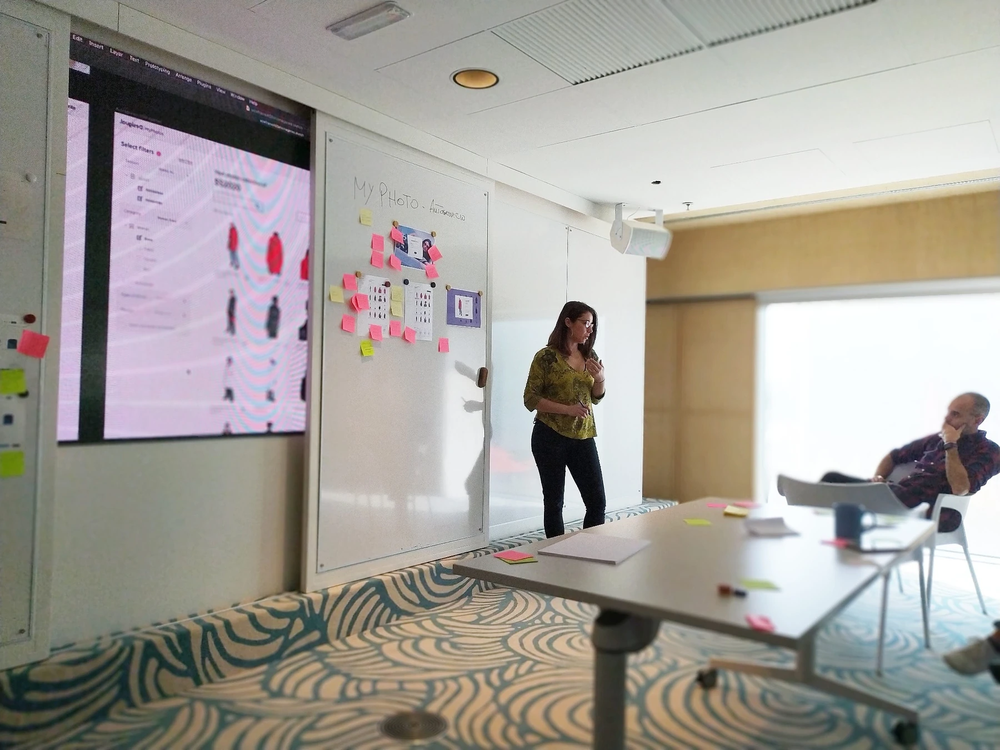
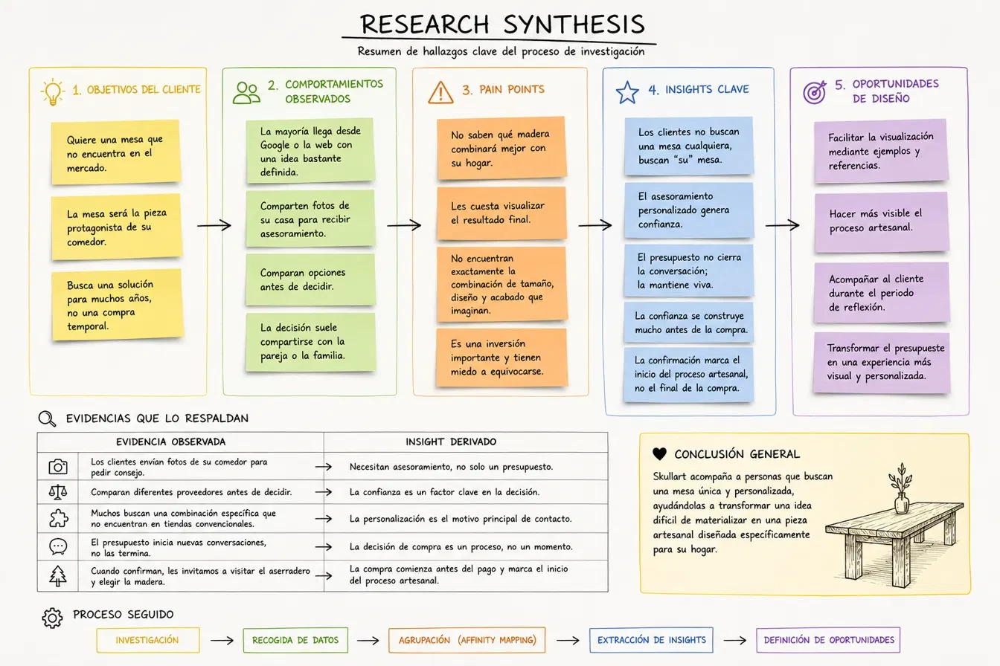

UX Research
Entrevistas, observación, dinámicas con usuarios, síntesis, journey maps e identificación de insights.
Conecto personas, negocio y diseño para convertir problemas complejos en experiencias claras, útiles y coherentes. Durante siete años trabajé en Desigual y actualmente aplico una mirada integral de diseño y negocio como cofundadora de SkullartDesign.



No me limito a diseñar pantallas. Investigo, ordeno información, detecto oportunidades y conecto la experiencia de las personas con los objetivos reales del negocio.
Mi recorrido empezó en el diseño gráfico, evolucionó hacia front-end y UX/UI y se amplió hacia Experience Design, Service Design y Customer Experience. Esa combinación me permite moverme con naturalidad entre estrategia y ejecución.
“Para mí, UX es cómo una persona vive todo el proceso contigo, no solo lo que ocurre dentro de una pantalla.”
Entrevistas, observación, dinámicas con usuarios, síntesis, journey maps e identificación de insights.
Arquitectura de información, user flows, wireframes, prototipos e interfaces para productos reales.
Diseño de puntos de contacto, funnels y recorridos digitales y presenciales de principio a fin.
Sesiones con usuarios y equipos para hacer visibles hallazgos, priorizar necesidades y definir soluciones.
Mi recorrido conecta diseño visual, tecnología, producto digital y experiencia de cliente. Cada etapa amplió la anterior y me dio una visión más completa del diseño.
Dirección de marca y experiencia, web y WooCommerce, estrategia de contenidos, customer journey, presupuestos, CRM, pricing, talleres, experiencias presenciales e IA aplicada a procesos reales de negocio.
Diseño de producto para B2C, B2B, retail y herramientas internas: research con usuarios, Design Thinking, journey y empathy maps, flujos, prototipos, dashboards y comunicaciones transaccionales.
Identidad visual, diseño editorial, maquetación web, HTML y CSS: la base visual y técnica desde la que evolucioné hacia UX y producto digital.
No empiezo por la pantalla. Empiezo por entender el problema y el negocio.
Diseño, valido con personas reales y no doy una solución por terminada hasta comprobar qué funciona. Para mí, diseñar es un ciclo, no una entrega aislada.
Escuchar, observar y reunir contexto antes de decidir.
Alinear el diseño con objetivos, procesos y restricciones reales.
Traducir el problema en flujos, estructura, contenido e interfaz.
Probar con personas reales antes de invertir en construir.
Ajustar con lo aprendido; el primer intento nunca es el último.
Comprobar con datos si la solución resolvió el problema.
Refinar de forma continua la experiencia y el producto.
Mi trabajo no se limitó a una aplicación. Participé en proyectos para distintos departamentos, canales y tipos de usuario.
El foco estaba en entender procesos reales y traducirlos en productos digitales útiles: experiencias B2C, herramientas B2B, visualización de información y soluciones internas para los equipos de tienda.
Estos bloques resumen el tipo de trabajo que desarrollé en Desigual. Los casos visuales que aparecen después son ejemplos dentro de este ecosistema, no empresas o experiencias independientes.
Checkout, devoluciones, loyalty, estados y emails transaccionales dentro del recorrido de compra y postcompra.
Dashboards y herramientas para consultar pedidos, compras, ventas e información de apoyo a decisiones.
RFID / Stock Optimizer, Sofía, PriceTag, AskMe y Assisted Shopping para apoyar tareas reales de tienda.
Entrevistas, journey maps, síntesis de insights, sesiones con usuarios y trabajo con equipos multidisciplinares.
Diseño de soluciones mobile y backoffice para trabajar con producto, exposición, stock, etiquetado e información operativa dentro del entorno retail.
El diseño se trabajaba con flujos completos, dispositivos físicos y sesiones con las personas que utilizarían la solución.
Revisión de recorridos, pantallas, estados y dependencias mediante material impreso y anotaciones.
Diseño junto a los dispositivos reales: lector, escáner e impresora de etiquetas utilizados en tienda.
Preparé una dinámica con quienes utilizaban la aplicación para presentar los hallazgos, hacer visibles los aspectos clave y priorizar las funcionalidades que debía incorporar.
Una vista completa del flujo mobile: selección de tienda, sincronización, conexión con impresora, impresión de etiquetas y consulta de precios.
Una segunda capa para gestionar jerarquías, estados, profundidad de producto, filtros, detalle y trazabilidad desde escritorio.
AskMe era una herramienta interna de Desigual. El research permitió comprender cómo se utilizaba en tienda, detectar fricciones y convertir los hallazgos en la evolución del producto: Assisted Shopping.
El estudio combinó comentarios positivos, problemas operativos y una comparación directa entre tablet y móvil.
Aplicamos técnicas de Design Thinking para traducir los hallazgos del uso real en una experiencia más clara y en patrones reutilizables para la interfaz.
Los casos anteriores muestran los proyectos con más material visual disponible. Mi experiencia incluyó también otros puntos del ecosistema digital.
Interfaces para visualizar compras, ventas, pedidos y datos relevantes para la toma de decisiones.
Flujos de compra y postcompra, estados, errores y procesos de devolución.
Experiencias vinculadas a clientes, puntos, historial y relación con la marca.
Diseño de comunicaciones ligadas a pedidos, confirmaciones, cambios y seguimiento.
Herramientas para consultar y gestionar información útil durante el trabajo en tienda.
Colaboración con distintos departamentos para convertir necesidades operativas en requisitos y soluciones.
En SkullartDesign no diseño solamente una web. Diseño cómo vive el cliente todo el proceso.
Desde el descubrimiento de la marca hasta la postventa, he analizado el journey, diseñado procesos y aplicado mejoras en los puntos de contacto digitales, comerciales, operativos y presenciales.
Diseño del recorrido completo de clientes que buscan una mesa o un mueble a medida: una compra personalizada, reflexiva y conectada con un proceso artesanal.
La experiencia se materializa en la web, las fichas de producto y las herramientas que permiten presupuestar, seguir clientes y tomar decisiones.
El journey permitió conectar cada punto de contacto y trabajar la coherencia de la experiencia, no solo la interfaz.
Web, buscadores, redes y recomendaciones deben explicar con claridad qué hacemos y por qué es diferente.
Email, formulario, WhatsApp o teléfono recogen la idea inicial y facilitan que el cliente comparta contexto e imágenes.
Referencias, materiales, medidas y ejemplos convierten una idea abstracta en una solución posible.
El presupuesto no cierra la conversación: estructura opciones, decisiones y expectativas.
Resolución de dudas y continuidad durante una decisión que suele compartirse y necesita tiempo.
Condiciones, pagos, plazos y personalización marcan el comienzo del proceso artesanal.
Coordinación, avances, logística e instalación forman parte del valor percibido.
Seguimiento, cuidados y resolución de incidencias prolongan la experiencia más allá de la entrega.
La metodología UX se tradujo en decisiones concretas dentro de la web, el proceso comercial y la relación con el cliente.
Adaptación completa de una web genérica a un producto artesanal, con estructura, contenidos, fichas y recorridos de contacto.
Organización de llamadas a la acción, formularios y mensajes para facilitar la solicitud de información y presupuesto.
Uso de referencias, ejemplos, fotografías y explicaciones para ayudar al cliente a imaginar el resultado.
Estructura de la información para clarificar materiales, medidas, acabados, precio, plazos y siguientes pasos.
Comunicación durante la reflexión, la fabricación, la entrega y la postventa para evitar rupturas en la experiencia.
Organización de presupuestos, clientes, estados y seguimiento para sostener una experiencia más coherente.
La experiencia del cliente depende tanto de la web como de los procesos internos y de lo que sucede en persona.
Partiendo de una plantilla, adapté por completo la web a un negocio de producto artesanal y fabricación a medida. Organicé arquitectura, fichas, mensajes, llamadas a la acción, formularios y contenidos para ayudar al cliente a comprender opciones, comparar y solicitar presupuesto con claridad.
Diseñé herramientas internas para transformar datos dispersos en un flujo controlable: cálculo de precios, márgenes y materiales; generación de presupuestos; gestión de clientes y proyectos; seguimiento del pipeline, producción, entregas y cobros.
Organicé una experiencia de manualidades con clientes diseñando el recorrido completo: propuesta y comunicación, compra y reserva, preparación previa, acogida en el taller, dinámica presencial, materiales, acompañamiento y cierre.
El objetivo era que cada punto de contacto, desde la decisión de compra hasta crear la pieza en persona, se sintiera sencillo, cálido y coherente con SkullartDesign.
Mi perfil combina investigación, producto, negocio, comunicación, tecnología e IA. Los niveles son orientativos y reflejan mi uso real en proyectos.
Busco un proyecto donde pueda aportar una mirada estratégica, práctica y conectada con las personas.